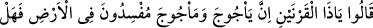
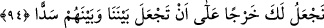
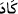

yayıldılar.”
94. Dediler ki: “Ey Zülkarneyn! Bu memlekette Ye’cûc ve Me’cûc bozgunculuk
yapmaktadırlar. Bizimle onlar arasında bir sed yapman için sana bir vergi verelim
mi?”
(Ye’cûc ve Me’cûc’ü) şikâyet ederek, tercümanları vâsıtasıyla “dediler ki:” Ancak
zahir olan şu ki Zülkarneyn (a.s.)’a bütün kavimlerin dilleri ihsân edilmişti. Dolayısıyla
onların sözlerini anladı.
et-Te’vîlâtü’n-Necmiyye’de şöyle der: “Allah onlardan nasıl “hemen hiçbir sözü
almayan” diye haber verdi, sonra da “dediler ki…” buyurdu? denilirse, buna şöyle
cevap veririz: “ ”, hemen/neredeyse anlamı ifade eden kelime, fiilin vuku bulduğunu
göstermez. Nitekim şu âyette de aynı durum vardır: “Neredeyse o (sözün dehşetinden)
gökler çatlayacak...” (Meryem, 19/90). Yâni çatlaması yaklaştı, ama çatlamadı. Şu âyet
de böyledir: “İneği boğazladılar; az daha yapamayacaklardı.” (el-Bakara, 2/71).
Yâni neredeyse onu kesmeyeceklerdi; ancak kestiler, demektir. İşte “hemen hiçbir sözü
anlamayan” sözü de böyledir. Yâni, onlara sed yapmak için Zülkarneyn (a.s.)’ın
kalbinin mutmain olacağı söz ve kelâmı anlamıyorlardı. Sonunda Allah’ın ilhâmı ile
anladılar ve şöyle dediler: “Ey Zülkarneyn! Bu memlekette Ye’cûc ve Me’cûc
bozgunculuk yapmaktadırlar.”
“Yeryüzünde bozgunculuk yapıyorlar.” Yâni bizim topraklarımızda öldürme, tahrip
ve mahsulleri telef etme gibi bozgunculuk yapıyorlar. Onlar bahar mevsiminde
çıkıyorlar, yeşil olan her şeyi yiyorlar, kurusunu da alıp götürüyorlardı. Bazen hayvan
ve benzerî türden bir şey bulamazlarsa insanları yedikleri de oluyordu. Onlardan her
biri silah taşıyan bin neslini görmedikçe vefat etmezdi. Bu yüzden İbn Abbâs
(r.anhümâ) “Âdemoğulları onların onda biridir.” demiştir.
Vücudları maymuna benzer
Kirpikleri sarı, yanakları kırmızı, gözleri mavi
Uykudan ve yemekten başka işleri yoktur
Onlardan birisi bin evlâdı olmadan ölmez
Onlar bir kaç sınıftır. Bir kısmı uzun boyludur. Onların boyu yüz yirmi arşındır. Bir
kısmının boyu bir karıştır, boyları ve enleri eşittir. Bir kısmı iri kulaklıdır. Onlardan
biri, bir kulağını yayar, diğeri ile onun üstünü örter. Soğuktan ve sıcaktan kuruyan,
vücudlarını örten kılları vardır. Onun için yün eğirip dokumazlar. Kurtlar gibi ulurlar,